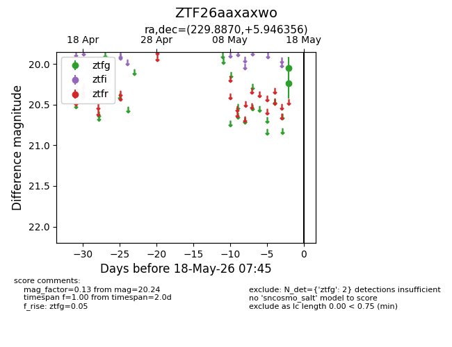
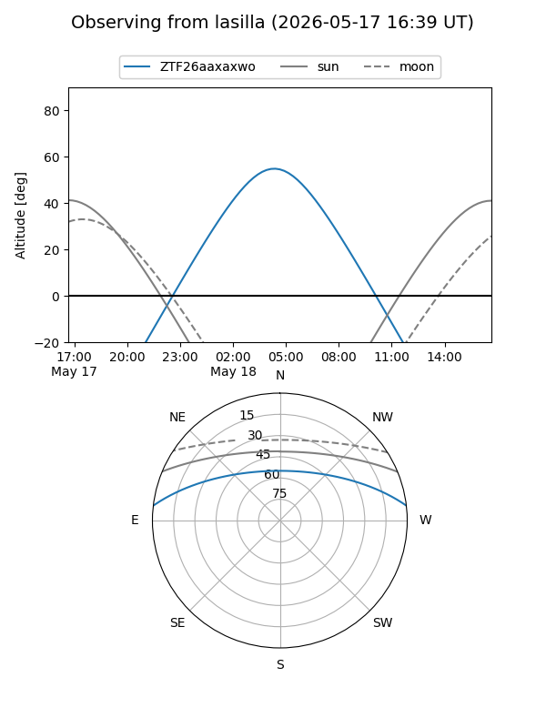
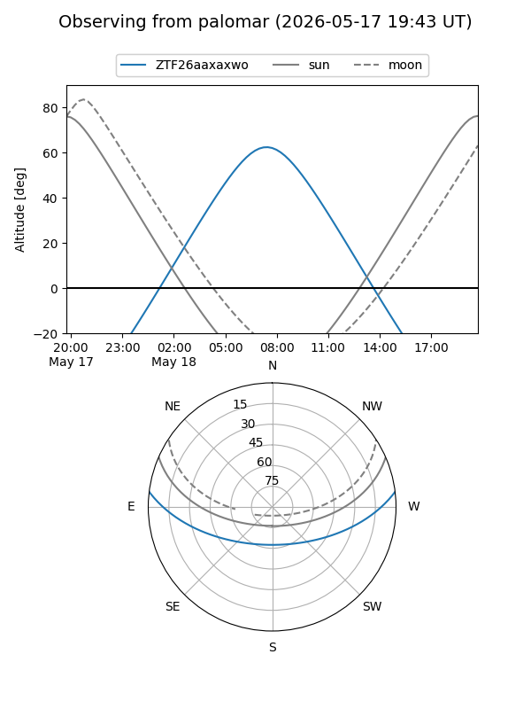

ZTF26aaxaxwo
Target ZTF26aaxaxwo at 2026-05-18 07:47
Aliases and brokers:
FINK: link
Lasair: link
ALeRCE: link
alt names
ZTF26aaxaxwo (ztf,fink_ztf)
Coordinates:
equatorial (ra, dec) = 229.8870,+5.94636
equatorial (HMS+DMS) = 15:19:32.89,+05:56:46.88
galactic (l, b) = (8.6770,+48.93232)
Flags:
Photometry:
last ztfg=20.24
2 ztfg detections
Lightcurve

Visibility


Additional plots